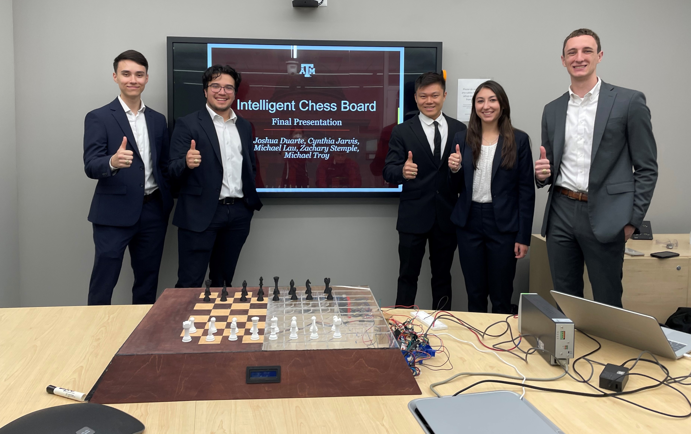
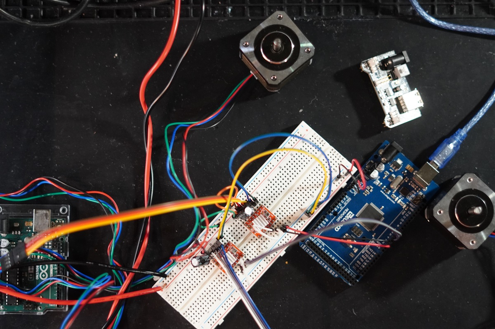

This is what I hope to be the first of many posts. 60 to be exact. Why 60? Well there is 60 days between today, May 26th, and July 25th. July 25th is my last day of summer. After this date I will be moving out of my apartment here in College Station and begin my move to California where I plan to obtain my Master of Engineering in Mechanical Engineering at U.C. Berkeley.
The last three summers I have been blessed with opportunities to intern with Northrop Grumman, ExxonMobil, and Boeing. Although I gained valuable experience, I never made the time to focus on personal interests. Whether it was personal project, physical health, building healthy habits, and financial awareness, I always pushed the idea of working on these things as I felt that I did not have the time.
This summer is different. I did not make the effort to obtain an internship to focus on what matters to me and what can set me up for a successful and eventful future. I no longer have the excuse of "I don't have the time". I have nothing but time. Well 60 days worth of time.
I am eager to see what can happen if you set time to work on things that are important to you. These blogs will serve as a way to keep myself accountable to doing something each day. No matter how small, I want to ensure I at least document something. This will allow me to view the progress made on any of the endeavors I take on.
With each blog, I hope to highlight different aspects of my day. This would include any of the projects I worked on, any lessons learned, successes, failures, along with tracking the habits I am building. These areas will be noted with a header as seen below. This being the first blog of the 60 days, it is quite a lengthy one.
If anyone is reading this, I am always open to any comments, feedback, suggestions, or anything really as I embark on this 60 day journey.
SHPE
Today, like most days this last year, was mostly dedicated to SHPE, or the Society of Hispanic Professional Engineers. I have had the privilege of serving as the President of my chapter at Texas A&M University this past academic year. Talking about that is a story for another day.
Twice every year, each chapter is responsible for delivering a report that highlights the successes and failures the chapter has witnessed over the course of the year. As President, I am responsible for the creation of this document. The report is due on June 15th. However, before creating this report, it is tradition that a document be created that that highlights events of the organization that have occured during the past semester. This document is then sent out to individuals that will serve as recommenders of the chapter to SHPE National. This semester, we have the privilege of having the Dean of Engineering, and one of advisors being recommenders.
My time today with respect to SHPE was spent finalizing a portion of the Spring Semester Event Highlight document to send it over to our recommenders so they can begin working on the letter of recommendation. I also began working on the report as well. It is going to be a busy couple of weeks with SHPE to say the least.
Gambit
This is the first of many personal projects that I will be talking about. However, it is the only one I worked on today, so you will just have to wait to hear about the rest. Gambit is the attempt to make a fully functional automated chessboard. What this entails is that you, a single entity, can play physical chess without having another person present.
This project was thought up as the beginning of the COVID-19 pandemic started. Many people during this time picked up new hobbies like running, sewing, or learning a new instrument. I picked up chess. The game facinated me and began taking up a huge amount of my free time. I would play online, with my roommates, or anyone who was up for it. However, as you can imagine during a pandemic, playing on a physical board with others became increasingly difficult. I was forced to solely play virtually, but with my academic courses being virtual, scrolling endlessly on my phone, and only being able to see others through a screen, I got tired of playing online chess quicker than you could say checkmate.
This led to the idea of creating a automated chessboard. I didn't think it would be too hard. Just connect a few motors to an electromagnet, find a way to tell the pieces apart and run it through a chess engine, and you should be good to go. Boy was I wrong.
Although it would be a challenging project, I would not have to go at it alone. During the summer of 2021, I had the idea of submitting this project as a proposal to be my senior design project. Thankfully, the proposal was accepted and during the course of my senior year, I was paired with 4 other mechanical engineers to bring this project to fruition.
With this project now being my senior design project, I had to scrap all of the ideas and efforts I have made to ensure that the team had a say in what the final product would be like. We then went through the entire design process and came up with something that was fairly similar to my initial concept and design. Throughout the course of this past semester, the team turned concepts into reality by creating a functional prototype. This prototype went on to impress countless individuals during the senior design showcase. Although it was 'functional', there was still a lot of room for improvement.
 Gambit chessboard team standing behind the functional prototype prior to the senior design showcase.Thankfully, university faculty has sponsored me to continue working on the project for another year where it will then be returned and displayed for prospective students, curious minds, and faculty alike. During this year, not only will I strive to create a refined product, but another board alike that will allow me to continue working on it after the year is complete.
One aspect that I am currently trying to improve are the electronics behind the movement subsystem of the chessboard. Currently, the board is operated using two NEMA 17 stepper motors. These stepper motors are then connected to subpar drivers. Today, I worked on connecting two motors to a new set of drivers that are more adequate for what I am trying to accomplish. The A4988 drivers are able to withstand greater currents and operate at lower temperatures than those that were previously used. The image below shows the quick circuit I made to work two motors.
 Two driver/stepper motor circuitAlthough it seems to be a fairly simple circuit, I am not an electrical engineer, so things can be a bit harder than they seem at times, and if I learn things, I learn them the hard way. The hard lesson I learned today was that of capacitors. They are not like resistors and must be placed in a specific orientation. If not, they will explode. As I personally witnessed. With the capacitor placed correctly, the motors worked smoothly. Tomorrow, I plan to make the motors work simulataneously to be able to move the gantry as needed in the chessboard.
Personal Project 'Internship'
During the summer proceeding my freshman year, I was blessed with the opportunity to be an intern for Northrop Grumman. This changed my life for the better. Seriously, this opportunity opened so many doors and gave me insights that I use to this day. With that in mind, I have taken the opportunity to mentor a few individuals who were unable to obtain an internship for the summer. I plan to take these students through a rigourous curriculum of desing, problem-solving, and prototyping.
Today marked the start of the program for one of my 'students', Kevin. Although I will not be able to work with him as closely as I would like due to to him taking an opportunity that has been provided to him by the university, I hope to make the most of the time we do have together. For Kevin, I thought I would get him started with a simple design project to get him acquanted with the design process. I asked him to create for me a phone stand. One that would allow me to prop my phone on my desk.
Beginning this project, I instructed him to create five seperate sketches with different views, and two of the designs must be comprised of atleast two parts. Once he completed this, I had him pitch these ideas and select one that he thought met some pre-established requirements and that he liked. He then went on to select dimensions that worked for the phone I have. He collected the dimensions using a pair of calipers. I made sure to give him my pair of manual calipers so he would be grateful to use the digital calipers later down the line. Tomorrow, he will continue working on this project by finalizing his sketch and input his design in solidworks where I hope he becomes familiar with the software itself. I have asked him to create all the parts of his design, create an assembly, and drawings for each part as well. One discussion I hope to have with him in the coming days is that of tolerances. He will be creating the phone holder itself using a SLA 3D printer which is sure to come with some issues. I can't wait!
Web Development
Aside from the other things going on with my day, I did plenty of web development. For instance, this blog needed to be created somehow. Using my prior knowledge of HTML and CSS, I was able to create this page that I know will change substantially by the end of the 60 days. It was challenging at first as it has been a while since I worked on a website, but it had to get done. Over the next few days, I will be working to refine my personal website to be more in tune with my current stage in life.
Habit Tracking
Another way I plan to use this blog is to track some of the habits I am wanting to build. Today, I journaled, worked out, read, tracked my caloric intake, and worked on at least one of my personal projects. Today was a good day.
What I am thankful for
I am thankful for my family, friends, and significant other who have impacted me greatly in helping me get to where I am today.
Let's make tomorrow count. Do More. - J.D.